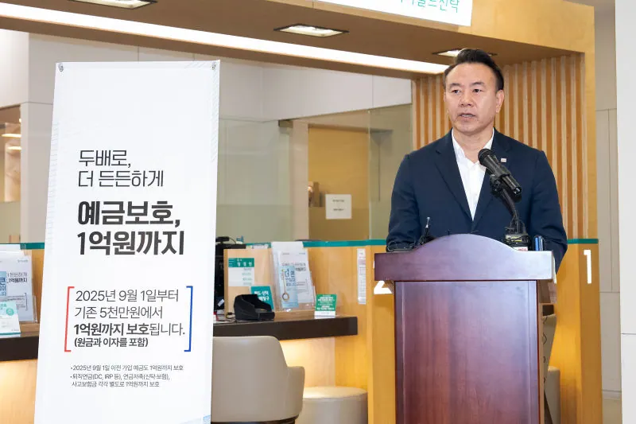

01
임직원 수 (현원)
800명2025년 현재

막대는 과거에서 지금까지 얼마나 자랐는지를, 큰 숫자는 2025년 기준 지금의 값을 보여 줍니다.
01
800명2025년 현재
02
3,259조5,788억 원2025년 현재
03
1억 원2025년 9월 상향
04
21조9,388억 원2025년 현재
05
31조7,618억 원2025년 현재
06
16조874억 원2025년 현재
07
110조8,946억 원2025년 현재
08
63조6,381억 원2025년 현재
09
44,668개2025년 현재
10
544개2025년 현재
11
3조4,850억 원2011~2015년 · 지급 인원 80,660명
12
19,601백만 원반환 건수 2021년 1,299건 → 2025년 16,091건
다음 쪽
아카이브